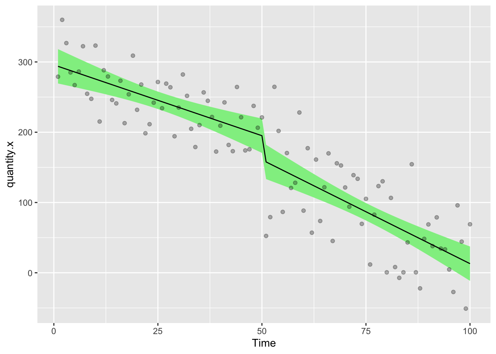

# Create a dummy dataframe
# Here the interruption takes place at week 51
df <- tibble(
Time = 1:100,
Intervention = c(rep(0, 50), rep(1, 50)),
Post.intervention.time = c(rep(0, 50), 1:50),
quantity.x = c(sort(sample(200:300, size = 50, replace = TRUE), decreasing = TRUE) + sample(-20:20, 50, replace = TRUE),
sort(sample(20:170, size = 50, replace = TRUE), decreasing = TRUE) + sample(-40:40, 50, replace = TRUE))
)
# Fit an ARIMA model to generate moderate autocorrelation
set.seed(123) # Set seed for reproducibility
# ARIMA(2, 0, 0) model
arima_model <- Arima(df$quantity.x, order = c(2, 0, 0))
# Extract residuals and amplify them to introduce moderate effect
amplified_residuals <- residuals(arima_model) * 1.2 # Amplify residuals by multiplying by 1.2
# Add the amplified residuals back to the original values, leaving the first value intact
df <- df %>%
mutate(quantity.x = quantity.x + c(0, amplified_residuals[-1]))
# Display the dataframe with moderate autocorrelation
datatable(df, options = list(pageLength = 100, scrollY = "200px"))13 Segmented Regression Analysis of Interrupted Time Series
13.1 Introduction
This is a brief introduction to Interrupted Time Series analyses. It’s intended for use by people who have done some reading and understand about concepts like autocorrelation.
I won’t be explaining all the technical stuff here but will be focussing on getting things done.
The general methods used in this set of examples are very well described in this paper on Segmented regression analysis of interrupted time series studies in medication use research, by Anita K. Wagner and colleagues and I recommend that you start by reading that paper at least twice.
The methods below will show you how to carry out an interrupted time series (ITS) using generalised least squares, accounting for autocorrelation via a corARMA model. We’ll start out with some fairly simple models, then build up to something a bit more complicated, before going on to add a control group.
We’re going to simulate a study where we are interested to know whether the values of a quantity (quantity.x) have changed significantly in response to some kind of intervention. If it helps you to think of a real-world situation, imagine we take weekly measurements of how many bacteria are found on the handles of public toilet doors. Our intervention might be placing signs about handwashing on all the doors. Can we say that putting up the signs correlated with a decrease in the number of bacteria counted each week?
At the core of this analysis is the concept of a counterfactual. We’ll be doing some modelling to estimate what did happen (the factual scenario) and what we expect would have happened (the counterfactual scenario) if we had never hung up the signs about handwashing.
We’ll be measuring whether the parameter quantity.x changes in response to the Intervention, but there are different kinds of change that we might expect.
The change could take two forms including
- A step change immediately after the intervention
- for instance because the signs are so effective that everyone suddenly starts washing their hands much better
- A slope/trend change after the intervention
- because over time, the presence of the signs conditions more and more people to wash their hands. Alternatively, maybe after an initial step change down, it starts to creep back up because people start to ignore the signs
Different real world scenarios may or may not be compatible with the assumptions that these types of change could occur, so use your knowledge to decide which ones to model.
13.1.1 This document provides examples of three main type of ITS analysis
- Part One - Uncontrolled ITS, one intervention
- Part Two - Uncontrolled ITS, two interventions
- Part Three - Controlled ITS, one intervention
In each case we will build a data set that shows each component of the model in a fairly longhand format. It’s totally possible to use fewer variables and to use interactions (shown further down this document) to model all the various components of the ITS, but this is harder to understand to the novice and harder to decode when it comes to reconciling the data frame against the model coefficients that will be used to interpret what effects the interruption had.
13.2 Part One - Uncontrolled ITS, one intervention
We’ll create a dummy dataframe, where
- Time = A number, the time in study weeks (1 - 100 weeks)
- Intervention = A binary indication of whether the Intervention has taken place at Time x
- Post.intervention.time = A number, the time elapsed since the Intervention
- quantity.x = The thing we want to measure
In the simplest form, the ITS model looks like this
gls(quantity.x ~ Time + Intervention + Post.intervention.time, data = df,method=“ML”)
Using the gls command from the nlme package, we can create a model that describes the change in quantity.x across time
model.a = gls(quantity.x ~ Time + Intervention + Post.intervention.time, data = df,method="ML")
# Show a summary of the model
summary(model.a)Generalized least squares fit by maximum likelihood
Model: quantity.x ~ Time + Intervention + Post.intervention.time
Data: df
AIC BIC logLik
1049.891 1062.917 -519.9454
Coefficients:
Value Std.Error t-value p-value
(Intercept) 295.79584 12.847369 23.023846 0.0000
Time -2.01474 0.438474 -4.594891 0.0000
Intervention -34.38002 17.902424 -1.920411 0.0578
Post.intervention.time -0.93919 0.620096 -1.514583 0.1332
Correlation:
(Intr) Time Intrvn
Time -0.870
Intervention 0.348 -0.600
Post.intervention.time 0.615 -0.707 -0.017
Standardized residuals:
Min Q1 Med Q3 Max
-2.4025774 -0.6727850 0.0287960 0.7829453 2.5718791
Residual standard error: 43.83865
Degrees of freedom: 100 total; 96 residualThese coefficients have real world meaning and are not there to be ignored.
This tells us that the modelled line passes the y axis at 295.6 units and that prior to the intervention, the average value of quantity.x was falling by 1.98 units per week. At the intervention, there was a step change of -24.8 units and subsequent to the intervention there was a trend in which the value of quantity.x fell by an additional 1.12 units per week. The last distinction is important because that means that after the intervention, the weekly decrease in quantity.x was 1.98 + 1.12 = 3.10
These statistics tell us whether the changes that happened at different timepoints were significant with respect to what the line was doing before the interruption. These values can be used to calculate the overall difference in quantity.x between times [i] and [ii] using this formula
quantity.x[i] = 308.27918 + (Time[i]*-1.97565) + (Intervention[i]*-27.33565) + (Post.intervention.time[i]*-1.17575)
quantity.x[ii] = 308.27918 + (Time[ii]*-1.97565) + (Intervention[ii]*-27.33565) + (Post.intervention.time[ii]*-1.17575)
absolute difference = difference(quantity.x[i] , quantity.x[ii])
But what would be nice would be to calculate the counterfactual scenario where the intervention didn’t happen and to estimate the difference between the factual values of quantity.x at time [i] and the counterfactuals at the same time [i]. This is coming up later.
It’s nice to add values from models to the df, so we will next copy the modelled values of quantity.x in to the df using the predictSE.gls command from the AICcmodavg package.
df<-df %>% mutate(
model.a.predictions = predictSE.gls (model.a, df, se.fit=T)$fit,
model.a.se = predictSE.gls (model.a, df, se.fit=T)$se
)Note that we captured both the predicted value of quantity.x and also the standard error on the estimate. We’ll need that to show the error margins and to draw confidence intervals on our charts.
Let’s draw a picture on which we will show the raw data points, then add the modelled data as a line describing the factual observations and a ribbon showing the 95% confidence interval on the model
ggplot(df,aes(Time,quantity.x))+
geom_ribbon(aes(ymin = model.a.predictions - (1.96*model.a.se), ymax = model.a.predictions + (1.96*model.a.se)), fill = "lightgreen")+
geom_line(aes(Time,model.a.predictions),color="black",lty=1)+
geom_point(alpha=0.3)
Before we get too much further though, we need to look at autocorrelation in the data. gls allows us to add corARMA structures by specifying values for p (the autoregressive order) and q (the moving average order).
13.2.1 Autocorrelation
Adding residual diagnostics can be nice start point from which to explore the data and see if we can see evidence for autocorrelation
First we’ll define a function to extract the residuals from an ITS dataset
# Function to calculate ACF or PACF values
get_acf_pacf <- function(residuals, max_lag, type = c("acf", "pacf"), model_name) {
type <- match.arg(type)
if (type == "acf") {
values <- acf(residuals, lag.max = max_lag, plot = FALSE)
} else {
values <- pacf(residuals, lag.max = max_lag, plot = FALSE)
}
data.frame(
lag = values$lag,
acf = values$acf,
model = model_name,
type = type
)
}We’ll also need to think about a threshold value at which a residual is significant. Let’s set this to 95% of the distribution of values for quantity.x.
n <- length(df$quantity.x) # Number of observations
threshold <- 1.96 / sqrt(n)Next we’ll extract the residuals from model.a
This is annual data, so the longest lag max_lag we could imagine would be a full year 52 week cycle
# Extract normalized residuals from the models
residuals_a <- residuals(model.a, type = 'normalized')
# Set the maximum lag for the autocorrelation and partial autocorrelation functions
max_lag <- 52
# Get ACF and PACF data for model.a
acf_a <- get_acf_pacf(residuals_a, max_lag, "acf", "Model A")
pacf_a <- get_acf_pacf(residuals_a, max_lag, "pacf", "Model A")13.2.1.1 Plot Autocorrelation Function (ACF) residuals
The ACF (Autocorrelation Function) is primarily used to determine the appropriate value for the Moving Average (MA)order q in an ARIMA model.
ggplotly(
ggplot(acf_a, aes(x = lag, y = acf)) +
geom_bar(stat = "identity", position = "dodge", fill = "steelblue") +
geom_hline(yintercept = c(-threshold, threshold), linetype = "dashed", color = "red") +
theme_minimal() +
labs(
title = "ACF for Model A",
x = "Lag",
y = "ACF"
)
)The big spike at lag 0 in the ACF of the residuals is entirely expected. This just shows how any data point is correlated to itself and can be ignored. If you have other significant spikes, then this might be addressed by including a moving average (MA) term. In a corARMA model, this means defining the value q. If you have spikes in higher lags, then maybe you need to increase the value of q to match. Those spikes imply that there is still autocorrelation in the data that has not been captured by the model. If you include q=2, then the moving average would include both of the lagged residuals up to 2 (i.e. lag =1, lag = 2)
You should look for where the ACF cuts off (i.e. where it drops to within the confidence bounds)
If the ACF shows significant correlations for the first few lags, but then cuts off after a specific lag (say lag 2, as seen here), it suggests that an MA(2) [i.e. q=2] model might be appropriate.
This is because the MA model accounts for how current values are related to past forecast errors.
13.2.1.2 Plot Partial Autocorrelation Function PACF residuals
PACF (Partial Autocorrelation Function) is used to determine the appropriate value for the Autoregressive (AR) order p in an ARIMA model.
ggplotly(
ggplot(pacf_a, aes(x = lag, y = acf)) +
geom_bar(stat = "identity", position = "dodge", fill = "steelblue") +
geom_hline(yintercept = c(-threshold, threshold), linetype = "dashed", color = "red") +
facet_wrap(~ model) +
theme_minimal() +
labs(
title = "PACF for Model A",
x = "Lag",
y = "PACF"
)
)The PACF plot helps identify the lag order by indicating the direct effect of each lag while controlling for intermediate lags.
You should look for where the PACF plot cuts off. For instance, if the PACF has a significant spike at lag 2 but becomes insignificant after that, it suggests that an AR(2) [i.e. p=2] model might be appropriate.
This is because an AR model captures the relationship between a current value and its past values.
In this data set there’s a significant spike at ACF lag=2 and another in PACF at 2. This might suggest that we should use an MA(2) AR(2) function. This would relate to p=2, q=2 in the R code.
13.2.2 A gls model with a corARMA correction
The corrected model looks like this
gls(quantity.x ~ Time + Intervention + Post.intervention.time, data = df,correlation= corARMA(p=1, q=1, form = ~ Time),method=“ML”)
but the critical issue is how to choose the correct values of p and q. There’s lots of information about this online, so read carefully because it is important. Whether you exactly understand what this is all about or not, you’ll still need to take steps to minimise the problem empirically.
So far we’ve looked at the ACF and PACF and have an idea that q=2, p=3 would be a good model for this data.
We’ll start by defining the basic model and then creating a basic R function that can apply different values of p and q to that model
mod.1 = quantity.x ~ Time + Intervention + Post.intervention.time
fx = function(pval,qval){summary(gls(mod.1, data = df, correlation= corARMA(p=pval,q=qval, form = ~ Time),method="ML"))$AIC}Next, let’s test out the provisional values of p and q.
model.b = gls(mod.1, data = df, correlation= corARMA(p=2,q=2, form = ~ Time),method="ML")and extract the residuals
# Extract normalized residuals from the models
residuals_b <- residuals(model.b, type = 'normalized')
# Get ACF and PACF data for model.a
acf_b <- get_acf_pacf(residuals_b, max_lag, "acf", "Model B")
pacf_b <- get_acf_pacf(residuals_b, max_lag, "pacf", "Model B")13.2.3 Plot Autocorrelation Function (ACF) residuals
The ACF (Autocorrelation Function) is primarily used to determine the appropriate value for the Moving Average (MA)order q in an ARIMA model.
ggplotly(
ggplot(acf_b, aes(x = lag, y = acf)) +
geom_bar(stat = "identity", position = "dodge", fill = "steelblue") +
geom_hline(yintercept = c(-threshold, threshold), linetype = "dashed", color = "red") +
theme_minimal() +
labs(
title = "ACF for Model B",
x = "Lag",
y = "ACF"
)
)13.2.4 Plot Partial Autocorrelation Function PACF residuals
PACF (Partial Autocorrelation Function) is used to determine the appropriate value for the Autoregressive (AR) order p in an ARIMA model.
ggplotly(
ggplot(pacf_b, aes(x = lag, y = acf)) +
geom_bar(stat = "identity", position = "dodge", fill = "steelblue") +
geom_hline(yintercept = c(-threshold, threshold), linetype = "dashed", color = "red") +
facet_wrap(~ model) +
theme_minimal() +
labs(
title = "PACF Model B",
x = "Lag",
y = "PACF"
)
)13.2.5 A More Exhaustive search for the best autocorrelation values
Using our empirically determined values of p and q seem to have helped a little, but there’s still a significant autocorrelation at lag 15 in the ACF plot and a significant spike at PACF lag 10.
What I often do here is to apply an exhaustive search of all combinations of values of p and q to the gls model that might be sifnificant, capturing the value of the Akaike Information Criterion (AIC) and Bayesian Information Criterion (BIC) for each model. Whichever combination of values of p and q returns the smallest AIC value is the best fit for our modelling.
Realistically there’s some margin for human biases here. It’s hard to exactly define good numbers to put in to this analysis. I’d recommend a broad range of values because sometime autocorrelations can be quite lagged. In this case, it’s clear that something is going on as far as p=10 and q=10 because both ACF and PACF plots have a spike at lag 10.
Our start point is the AIC value of the model we ran earlier where neither p or q were specified (i.e. no autocorrelation)
p = summary(gls(mod.1, data = df,method="ML"))$AIC
message(str_c ("AIC Uncorrelated model = ",p))AIC Uncorrelated model = 1049.8908715391Next we can create a grid of combinations of values of p and q
Above we can see that sensible values of q might be 0,1,2,10,14,15 and 25. Meanwhile sensible values of p might be 0,1,2,10 and 15
autocorrel = expand.grid(qval = c(0,1,2,10,14,15,25), pval = c(0,1,2,10,15))Then we apply the function to all possible combinations of p and q. Expect some not to work with this dummy data set because the models won’t all converge. You can fiddle with the settings to increase the number of iterations if you have issues with non-convergence. This may also take a while as there’s lots of computations happening. For the sake of illustration, I’m going to remove the ones which don’t converge from this example.
# Increase the number of iterations for the optimization process
control <- nlme::glsControl(maxIter = 1500, msMaxIter = 1500) # Adjust max iterations as needed
for (i in 2:nrow(autocorrel)) {
try({
model <- gls(mod.1, data = df, correlation = corARMA(p = autocorrel$pval[i], q = autocorrel$qval[i], form = ~ Time), method = "ML")
autocorrel$BIC[i] <- AIC(model, k = log(nrow(df))) # Calculate BIC using AIC function
autocorrel$AIC[i] <- AIC(model) # Calculate AIC directly
})
}Error in `$<-.data.frame`(`*tmp*`, "BIC", value = c(NA, 1060.5897436766 :
replacement has 2 rows, data has 35
Error in `$<-.data.frame`(`*tmp*`, "BIC", value = c(NA, NA, 1057.94350685086 :
replacement has 3 rows, data has 35
Error in `$<-.data.frame`(`*tmp*`, "BIC", value = c(NA, NA, NA, 1081.84593352225 :
replacement has 4 rows, data has 35
Error in gls(mod.1, data = df, correlation = corARMA(p = autocorrel$pval[i], :
function evaluation limit reached without convergence (9)
Error in `coef<-.corARMA`(`*tmp*`, value = value[parMap[, i]]) :
NA/NaN/Inf in foreign function call (arg 1)
Error in `coef<-.corARMA`(`*tmp*`, value = value[parMap[, i]]) :
NA/NaN/Inf in foreign function call (arg 1)
Error in `coef<-.corARMA`(`*tmp*`, value = value[parMap[, i]]) :
NA/NaN/Inf in foreign function call (arg 1)
Error in gls(mod.1, data = df, correlation = corARMA(p = autocorrel$pval[i], :
false convergence (8)
Error in `coef<-.corARMA`(`*tmp*`, value = value[parMap[, i]]) :
NA/NaN/Inf in foreign function call (arg 1)
Error in `coef<-.corARMA`(`*tmp*`, value = value[parMap[, i]]) :
NA/NaN/Inf in foreign function call (arg 1)
Error in `coef<-.corARMA`(`*tmp*`, value = value[parMap[, i]]) :
NA/NaN/Inf in foreign function call (arg 1)
Error in `coef<-.corARMA`(`*tmp*`, value = value[parMap[, i]]) :
NA/NaN/Inf in foreign function call (arg 1)
Error in gls(mod.1, data = df, correlation = corARMA(p = autocorrel$pval[i], :
function evaluation limit reached without convergence (9)
Error in `coef<-.corARMA`(`*tmp*`, value = value[parMap[, i]]) :
NA/NaN/Inf in foreign function call (arg 1)
Error in `coef<-.corARMA`(`*tmp*`, value = value[parMap[, i]]) :
NA/NaN/Inf in foreign function call (arg 1)
Error in gls(mod.1, data = df, correlation = corARMA(p = autocorrel$pval[i], :
false convergence (8)
Error in gls(mod.1, data = df, correlation = corARMA(p = autocorrel$pval[i], :
function evaluation limit reached without convergence (9)
Error in gls(mod.1, data = df, correlation = corARMA(p = autocorrel$pval[i], :
function evaluation limit reached without convergence (9)
Error in gls(mod.1, data = df, correlation = corARMA(p = autocorrel$pval[i], :
false convergence (8)# Remove rows with NA in BIC or AIC
#autocorrel <- autocorrel %>% filter(!is.na(BIC), !is.na(AIC))
autocorrel qval pval BIC AIC
1 0 0 NA NA
2 1 0 NA NA
3 2 0 NA NA
4 10 0 NA NA
5 14 0 1096.567 1047.069
6 15 0 1100.903 1048.800
7 25 0 NA NA
8 0 1 1064.656 1049.025
9 1 1 1055.094 1036.858
10 2 1 1062.361 1041.519
11 10 1 NA NA
12 14 1 NA NA
13 15 1 NA NA
14 25 1 NA NA
15 0 2 1059.878 1041.642
16 1 2 1062.179 1041.337
17 2 2 1061.106 1037.660
18 10 2 NA NA
19 14 2 NA NA
20 15 2 1096.567 1047.069
21 25 2 NA NA
22 0 10 1087.249 1048.171
23 1 10 1081.233 1039.551
24 2 10 1085.379 1041.091
25 10 10 1096.567 1047.069
26 14 10 NA NA
27 15 10 NA NA
28 25 10 NA NA
29 0 15 1105.131 1053.028
30 1 15 1095.635 1040.926
31 2 15 1092.984 1035.670
32 10 15 NA NA
33 14 15 1133.788 1045.212
34 15 15 NA NA
35 25 15 1096.567 1047.06913.2.6 Show the AIC vs BIC
Choose one which has low values for both dimensions
ggplotly(
ggplot(autocorrel, aes(AIC, BIC, label = paste("p=", pval, " q=", qval))) +
geom_point()
)Here, there’s models which are more predictive (i.e. AIC is lower) but which have relatively higher potential for overfitting (BIC is higher) and vice versa. I think I’m going to go with p=1, q=1 as this balances the two priorities and seems to be the best overall combination
Let’s see what effect that has on our model by making a new model.c and comparing it to the original model.a and p=2,q=2 (model.b)
model.c = gls(quantity.x ~ Time + Intervention + Post.intervention.time, data = df,method="ML", correlation= corARMA(p=1,q=1, form = ~ Time))13.3 Check the residuals
Adding residual diagnostics can help confirm that the model adequately captures the dynamics of the data. Let’s add residual checks to ensure our assumptions hold.
# Extract normalized residuals from the models
residuals_a <- residuals(model.a, type = 'normalized')
residuals_b <- residuals(model.b, type = 'normalized')
residuals_c <- residuals(model.c, type = 'normalized')
# Set the maximum lag for the autocorrelation and partial autocorrelation functions
max_lag <- 52
# Get ACF and PACF data for both models
acf_a <- get_acf_pacf(residuals_a, max_lag, "acf", "Model A")
pacf_a <- get_acf_pacf(residuals_a, max_lag, "pacf", "Model A")
acf_b <- get_acf_pacf(residuals_b, max_lag, "acf", "Model B")
pacf_b <- get_acf_pacf(residuals_b, max_lag, "pacf", "Model B")
acf_c <- get_acf_pacf(residuals_c, max_lag, "acf", "Model c")
pacf_c <- get_acf_pacf(residuals_c, max_lag, "pacf", "Model c")
# Combine all data into a single dataframe
acf_data <- bind_rows(acf_a, acf_b,acf_c)
pacf_data <- bind_rows(pacf_a, pacf_b,pacf_c)Plot Autocorrelation Function ACF residuals
ggplot(acf_data, aes(x = lag, y = acf)) +
geom_bar(stat = "identity", position = "dodge", fill = "steelblue") +
geom_hline(yintercept = c(-threshold, threshold), linetype = "dashed", color = "red") +
facet_wrap(~ model) +
theme_minimal() +
labs(
title = "ACF for Models A, B and C",
x = "Lag",
y = "ACF"
)You can see that there’s relatively little difference between model.b and model.c
13.3.1 Plot Partial Autocorrelation Function PACF residuals
ggplotly(
ggplot(pacf_data, aes(x = lag, y = acf)) +
geom_bar(stat = "identity", position = "dodge", fill = "steelblue") +
geom_hline(yintercept = c(-threshold, threshold), linetype = "dashed", color = "red") +
facet_wrap(~ model) +
theme_minimal() +
labs(
title = "PACF for Models A, B and C",
x = "Lag",
y = "ACF"
)
)It even looks like model.c is worse than model.b in this respect. Really you could go back and forth all day on this!
13.4 Look how MA/AR corrections affect results
coefficients(model.a) (Intercept) Time Intervention
295.7958393 -2.0147413 -34.3800207
Post.intervention.time
-0.9391869 coefficients(model.b) (Intercept) Time Intervention
293.695634 -2.042827 -21.229331
Post.intervention.time
-1.269343 coefficients(model.c) (Intercept) Time Intervention
293.710803 -2.041917 -21.456791
Post.intervention.time
-1.262984 You can see that there’s some big changes to the values here.
The initial correction we did in model.b had a big effect, changing both the magnitude of the intervention (by ~13 units) and the post.intervention.time (by ~ 0.3 units per week. Post.intervention.time describes a weekly trend, so over long time periods, the error would creep up to make a huge difference in your results if you didn’t correct for autocorrelation.
The additional refinement we made by selecting model.c which had a higher value of p and q and which had less variance in the residuals plots, didn’t make as big a difference at all, which I suppose we should expect from looking at the ACF and PACF curves. Higher complexity models would likely overfit the data, make it hard to calculate models on counterfactuals and generally make your life bad, so I suggest just doing something relatively simple and accepting that there’s always some margin of error and a trade-off between predictive capacity and overfitting of the model.
13.5 Ljung-Box Test
This simple test will tell you if there’s significant autocorrelation left in the residuals. If p<0.05 there is.
Box.test(residuals(model.a), type = "Ljung-Box", lag = 20)
Box-Ljung test
data: residuals(model.a)
X-squared = 23.272, df = 20, p-value = 0.2756Box.test(residuals(model.b), type = "Ljung-Box", lag = 20)
Box-Ljung test
data: residuals(model.b)
X-squared = 23.87, df = 20, p-value = 0.2481Box.test(residuals(model.c), type = "Ljung-Box", lag = 20)
Box-Ljung test
data: residuals(model.c)
X-squared = 23.878, df = 20, p-value = 0.2478If we went on this alone, we’d accept the first model.a, but actually I prefer model.b for reasons described above. Obviously, your own data set will have its own set of peculiarities that you’ll need to investigate.
13.5.1 Predicted values of model.b
OK, so now we’ve dealt with the autocorrelation, let’s assign the predicted values of our preferred model.b on to the df
df<- df %>%
mutate(
model.b.predictions = predictSE.gls (model.b, df, se.fit=T)$fit,
model.b.se = predictSE.gls (model.b, df, se.fit=T)$se
)Next we need to ask what would have happened if there had been no intervention. This is the counterfactual model.
The gls model for the counterfactual looks like this…
gls(quantity.x ~ Time, data = df,method=“ML”)
There’s nothing clever about this, it’s the same model as we had before, only we’ve taken out the intervention and post intervention arguments. Our aim here is to calculate the pre-intervention trend and simply to extrapolate out beyond the intervention time point. This can be done with the predictSE.gls function.
To create the counterfactual model, we have to make a new df which truncates the data at the time point immediately before the intervention. Then we run predict on the model, providiing the original df as ‘newdata’.
df2<-filter(df,Time<51)
model.d = gls(quantity.x ~ Time, data = df2, correlation= corARMA(p=2,q=2, form = ~ Time),method="ML")Let’s have a look at how the new counterfactual (model.d, overwriting the old one because I’m lazy) model compares to the factual model (model.a).
coefficients(model.a) (Intercept) Time Intervention
295.7958393 -2.0147413 -34.3800207
Post.intervention.time
-0.9391869 coefficients(model.d)(Intercept) Time
294.392508 -1.998109 As you can see here, the intercept and slope of the factual and counterfactual models are almost identical, which is what we wanted. If you were a purist who cared about those little differences, you could use the actual values from model.a to calculate the counterfactuals manually by doing this
y = 295.7958393 + (Time * -2.0147413)
That’s great in terms of accuracy of your y value estimates, but it is much harder to calculate the standard errors manually so your precision/confidence intervals becomes a real pain. This is especially true when the model gets more complicated (as we’ll see in part two).
So let’s accept a little error in the accuracy and use ‘predict’ because it gives us nice precise confidence estimates, let’s make a new variable with predictions of the counterfactual model, providing the full 100 week data frame as ‘newdata’
df<-df %>% mutate(
model.d.predictions = predictSE.gls (model.d, newdata = df, se.fit=T)$fit,
model.d.se = predictSE.gls (model.d, df, se.fit=T)$se
)Next we can plot the chart
ggplot(df,aes(Time,quantity.x))+
geom_ribbon(aes(ymin = model.d.predictions - (1.96*model.d.se), ymax = model.d.predictions + (1.96*model.d.se)), fill = "pink")+
geom_line(aes(Time,model.d.predictions),color="red",lty=2)+
geom_ribbon(aes(ymin = model.b.predictions - (1.96*model.b.se), ymax = model.b.predictions + (1.96*model.b.se)), fill = "lightgreen")+
geom_line(aes(Time,model.b.predictions),color="black",lty=1)+
geom_point(alpha=0.3)The solid line with green ribbon is the factual data, the red dashed line with the pink ribbon is the counterfactual. Using the rule of thumb that if the confidence intervals don’t overlap, there’s something significant happening, we can conclude that the interruption preceded a significant step change in quantity.x. That the lines also diverge suggests that there could be a significant trend change.
The last remaining thing we need to do is to calculate those relative differences. This is easy because we’ve been adding the modelled values to the df as variables. To get a list of the relative differences at different timepoints, we really only have to do subtract the factual from the counterfactual.
Here’ we can ask for the relative differences at weeks 1 (start), 50 (pre-intervention), 51 (immediate post-intervention) and 100 (end of the study)
format(df$model.b.predictions-df$model.d.predictions,scientific = F)[c(1,50,51,100)] 1 50 51 100
" -0.7415923" " -2.9327748" "-25.4761670" "-89.8651631" Here we can see that pre-intervention, the difference between factual and counterfactual is essentially zero, which is what we expect. At week 51 we see that the difference is 26 units, almost the same as the step change we saw in the coefficients for model.b above. At week 100 the factual data are 82 units lower than the counterfactual, which is the combined effect of the intervention step change and the intervention trend change.
13.6 Part Two - Uncontrolled ITS, two interventions
Some designs may include multiple interventions and it is fairly simple to extend the model to account for this kind of thing We’ll make a new data set that includes a second intervention and a post-intervention-2 trend.
# create a dummy dataframe
# Here the interruption takes place at week 51
df3<-tibble(
Time = 1:150,
Intervention = c(rep(0,50),rep(1,100)),
Post.intervention.time = c(rep(0,50),1:100),
Intervention.2 = c(rep(0,100),rep(1,50)),
Post.intervention.2.time = c(rep(0,100),1:50),
quantity.x = c(sort(sample(2000:2500,size = 50,replace = T),decreasing = T)+sample(-20:20,50,replace = T),c(sort(sample(200:1700,size = 50,replace = T),decreasing = T)+sample(-40:40,50,replace = T)),c(sort(sample(200:450,size = 50,replace = T),decreasing = F)+sample(-40:40,50,replace = T)))
)
datatable(df3,options = list(pageLength = 100, scrollY = "200px"))The new ITS model looks like this
gls(quantity.x ~ Time + Intervention + Post.intervention.time + Intervention.2 + Post.intervention.2.time, data = df,method=“ML”, correlation= corARMA(p=2,q=2, form = ~ Time))
Remember that you should probably deal with autocorrelation at this point. The method is the same as before, so I won’t reproduce it here. I’m just going to make up some values for p and q
model.d = gls(quantity.x ~ Time + Intervention + Post.intervention.time + Intervention.2 + Post.intervention.2.time, data = df3,method="ML", correlation= corARMA(p=2,q=2, form = ~ Time))
# Show a summary of the model
summary(model.d)Generalized least squares fit by maximum likelihood
Model: quantity.x ~ Time + Intervention + Post.intervention.time + Intervention.2 + Post.intervention.2.time
Data: df3
AIC BIC logLik
1439.229 1472.346 -708.6146
Correlation Structure: ARMA(2,2)
Formula: ~Time
Parameter estimate(s):
Phi1 Phi2 Theta1 Theta2
-0.1786700 0.7084663 0.5430931 -0.3129867
Coefficients:
Value Std.Error t-value p-value
(Intercept) 2513.1264 18.369456 136.81006 0.000
Time -10.1573 0.597890 -16.98864 0.000
Intervention -361.2113 20.878417 -17.30070 0.000
Post.intervention.time -18.6064 0.909986 -20.44690 0.000
Intervention.2 -22.0933 20.889070 -1.05765 0.292
Post.intervention.2.time 34.1683 0.909986 37.54819 0.000
Correlation:
(Intr) Time Intrvn Pst.n. Intr.2
Time -0.851
Intervention 0.243 -0.488
Post.intervention.time 0.618 -0.779 -0.010
Intervention.2 -0.025 0.051 0.146 -0.342
Post.intervention.2.time -0.066 0.135 0.368 -0.577 -0.033
Standardized residuals:
Min Q1 Med Q3 Max
-3.2828539 -0.6002970 0.1169462 0.6345249 3.0034906
Residual standard error: 31.75995
Degrees of freedom: 150 total; 144 residualReferring back to the earlier, more simple example, you can probably see that these coefficients are easy to explain.
- The intercept is still the initial average value of quantity.x
- Time is the pre-intervention slope
- Intervention describes the step change that occurs at the intervention timepoint
- Post.intervention.time describes the additional slope change that occurs at the intervention timepoint
- Intervention.2 describes the step change that occurs at the timepoint of the second intervention
- Post.intervention.2.time describes the additional slope change that occurs at the timepoint of the second intervention
Let’s grab the estimated modelled values for the new two intervention study
df3<-df3 %>% mutate(
model.d.predictions = predictSE.gls (model.d, df3, se.fit=T)$fit,
model.d.se = predictSE.gls (model.d, df3, se.fit=T)$se
)Let’s draw a picture on which we will show the raw data points, then add the modelled data as a line describing the factual observations and a ribbon showing the 95% confidence interval on the model
ggplot(df3,aes(Time,quantity.x))+
geom_ribbon(aes(ymin = model.d.predictions - (1.96*model.d.se), ymax = model.d.predictions + (1.96*model.d.se)), fill = "lightgreen")+
geom_line(aes(Time,model.d.predictions),color="black",lty=1)+
geom_point(alpha=0.3)let’s calculate the first counterfactual, that there were no interventions
df4<-filter(df3,Time<51)
model.e = gls(quantity.x ~ Time, data = df4, correlation= corARMA(p=1, q=1, form = ~ Time),method="ML")
df3<-df3 %>% mutate(
model.e.predictions = predictSE.gls (model.e, newdata = df3, se.fit=T)$fit,
model.e.se = predictSE.gls (model.e, df3, se.fit=T)$se
)and then the second counterfactual, that only the first intervention happened
df5<-filter(df3,Time<101)
model.f = gls(quantity.x ~ Time + Intervention + Post.intervention.time, data = df5, correlation= corARMA(p=1, q=1, form = ~ Time),method="ML")
df3<-df3 %>% mutate(
model.f.predictions = predictSE.gls (model.f, newdata = df3, se.fit=T)$fit,
model.f.se = predictSE.gls (model.f, df3, se.fit=T)$se
)Finally, let’s draw the chart that shows the factual data (black,green), the first (red, pink) and second (navy, turquoise) counterfactuals
ggplot(df3,aes(Time,quantity.x))+
geom_ribbon(aes(ymin = model.f.predictions - (1.96*model.d.se), ymax = model.f.predictions + (1.96*model.e.se)), fill = "lightblue")+
geom_line(aes(Time,model.f.predictions),color="blue",lty=2)+
geom_ribbon(aes(ymin = model.e.predictions - (1.96*model.d.se), ymax = model.e.predictions + (1.96*model.e.se)), fill = "pink")+
geom_line(aes(Time,model.e.predictions),color="red",lty=2)+
geom_ribbon(aes(ymin = model.d.predictions - (1.96*model.d.se), ymax = model.d.predictions + (1.96*model.d.se)), fill = "lightgreen")+
geom_line(aes(Time,model.d.predictions),color="black",lty=1)+
geom_point(alpha=0.3)You can use the stored modelled values to do any calculations you want with regards to the relative differences. Remember that some things can’t ever go below zero and that your hypothesis probably isn’t that there’s a linear trend that continues forever. Think carefully about your counterfactuals in this context.
13.7 Part Three - Controlled ITS, one intervention
Controlled ITS is about as good as it gets when it comes to time series. The control allows you to calibrate the ITS to account for independent secular and periodic changes. Let’s say that quantity.x and quantity.y are related. Both have exhibited some kind of long-range secular change (for instance there’s the pre-intervention trend in the examples above). Let’s say that both quantity.x and quantity.y are experiencing a parallel trend pre-intervention.
The intervention is intented to affect change in quantity.x, but not quantity.y, so post-intervention trends in quantity.y can be taken account for in our model, strenghtening our results.
Let’s make a data set.
# create a dummy dataframe
# Here the interruption takes place at week 51
df.x<-tibble(
x = 1,
Time = 1:100,
x.Time = x*Time,
Intervention = c(rep(0,50),rep(1,50)),
x.Intervention = x*Intervention,
Post.intervention.time = c(rep(0,50),1:50),
x.Post.intervention.time = x * Post.intervention.time,
quantity.x = c(sort(sample(200:300,size = 50,replace = T),decreasing = T)+sample(-20:20,50,replace = T),c(sort(sample(20:170,size = 50,replace = T),decreasing = T)+sample(-40:40,50,replace = T)))
)
df.y<-tibble(
x = 0,
Time = 1:100,
x.Time = x*Time,
Intervention = c(rep(0,50),rep(1,50)),
x.Intervention = x*Intervention,
Post.intervention.time = c(rep(0,50),1:50),
x.Post.intervention.time = x * Post.intervention.time,
quantity.x = c(sort(sample(500:600,size = 50,replace = T),decreasing = T)+sample(-20:20,50,replace = T),c(sort(sample(280:500,size = 50,replace = T),decreasing = T)+sample(-40:40,50,replace = T)))
)
df6 = bind_rows(df.x,df.y) %>%
arrange(Time,x)
datatable(df6,options = list(pageLength = 200, scrollY = "200px"))Look carefully at the dataset. I’ve introduced the variable x (which differentiates between the control (0) and test (1) groups, plus some new Interaction terms including x.Time, x.Intervention and x.Post.intervention.time. Each of these is just the value of the variable, multiplied by x (which indicates control variables [0, i.e. quantity.y] or variables of interest [1, i.e. quantity.x]). This makes those variables null for the controls and meaninful step or trend changes for the lines of the data relating to quantity.x
The ITS model is now a little more complicated. Again, I’ve skipped the step where we test different values of p and q. You should not skip that!
gls(quantity.x ~ Time + x.Time + Intervention + x.Intervention + Post.intervention.time + x.Post.intervention.time, data = df6, correlation= corARMA(p=1, q=1, form = ~ Time|x),method=“ML”)
Note that we’ve had to change the form = ~ Time|x) argument in the corARMA to account for the fact that it needs to correct for autocorrelation across time and across the two groups where x == 1 and x == 0
model.g = gls(quantity.x ~ x + Time + x.Time + Intervention + x.Intervention + Post.intervention.time + x.Post.intervention.time, data = df6,method="ML", correlation= corARMA(p=2,q=2, form = ~ Time|x))
# Show a summary of the model
summary(model.g)Generalized least squares fit by maximum likelihood
Model: quantity.x ~ x + Time + x.Time + Intervention + x.Intervention + Post.intervention.time + x.Post.intervention.time
Data: df6
AIC BIC logLik
1758.9 1801.778 -866.4499
Correlation Structure: ARMA(2,2)
Formula: ~Time | x
Parameter estimate(s):
Phi1 Phi2 Theta1 Theta2
0.10771949 -0.45234784 -0.09574448 0.64057848
Coefficients:
Value Std.Error t-value p-value
(Intercept) 601.6579 6.138936 98.00687 0.0000
x -295.7286 8.681766 -34.06318 0.0000
Time -1.9366 0.208916 -9.26991 0.0000
x.Time -0.0924 0.295452 -0.31265 0.7549
Intervention -2.5040 8.459708 -0.29599 0.7676
x.Intervention -32.7129 11.963833 -2.73431 0.0068
Post.intervention.time -2.4599 0.297490 -8.26891 0.0000
x.Post.intervention.time 1.8554 0.420714 4.41023 0.0000
Correlation:
(Intr) x Time x.Time Intrvn x.Intr Pst.n.
x -0.707
Time -0.869 0.614
x.Time 0.614 -0.869 -0.707
Intervention 0.340 -0.241 -0.593 0.419
x.Intervention -0.241 0.340 0.419 -0.593 -0.707
Post.intervention.time 0.616 -0.435 -0.712 0.503 -0.018 0.012
x.Post.intervention.time -0.435 0.616 0.503 -0.712 0.012 -0.018 -0.707
Standardized residuals:
Min Q1 Med Q3 Max
-2.5927345 -0.6294354 -0.1224230 0.7533547 2.2872558
Residual standard error: 18.81718
Degrees of freedom: 200 total; 192 residualIf you were a fancy Dan with these things, you could also use interaction terms in your model to achieve the same result
model.h = gls(quantity.x ~ Time*x + Intervention*x + Post.intervention.time*x, data = df6,method="ML", correlation= corARMA(p=2,q=2, form = ~ Time|x))
# Show a summary of the model
summary(model.h)Generalized least squares fit by maximum likelihood
Model: quantity.x ~ Time * x + Intervention * x + Post.intervention.time * x
Data: df6
AIC BIC logLik
1758.9 1801.778 -866.4499
Correlation Structure: ARMA(2,2)
Formula: ~Time | x
Parameter estimate(s):
Phi1 Phi2 Theta1 Theta2
0.10771949 -0.45234784 -0.09574448 0.64057848
Coefficients:
Value Std.Error t-value p-value
(Intercept) 601.6579 6.138936 98.00687 0.0000
Time -1.9366 0.208916 -9.26991 0.0000
x -295.7286 8.681766 -34.06318 0.0000
Intervention -2.5040 8.459708 -0.29599 0.7676
Post.intervention.time -2.4599 0.297490 -8.26891 0.0000
Time:x -0.0924 0.295452 -0.31265 0.7549
x:Intervention -32.7129 11.963833 -2.73431 0.0068
x:Post.intervention.time 1.8554 0.420714 4.41023 0.0000
Correlation:
(Intr) Time x Intrvn Pst.n. Time:x x:Intr
Time -0.869
x -0.707 0.614
Intervention 0.340 -0.593 -0.241
Post.intervention.time 0.616 -0.712 -0.435 -0.018
Time:x 0.614 -0.707 -0.869 0.419 0.503
x:Intervention -0.241 0.419 0.340 -0.707 0.012 -0.593
x:Post.intervention.time -0.435 0.503 0.616 0.012 -0.707 -0.712 -0.018
Standardized residuals:
Min Q1 Med Q3 Max
-2.5927345 -0.6294354 -0.1224230 0.7533547 2.2872558
Residual standard error: 18.81718
Degrees of freedom: 200 total; 192 residualSee, they’re identical! Personally I prefer to have the variables like x.Intervention written out in my datasets in full. Working with interactions confuses me and I also don’t like the way R presents the coefficients out of order.
So let’s look at the longhand version in detail
coefficients(model.g) (Intercept) x Time
601.65788853 -295.72858910 -1.93663195
x.Time Intervention x.Intervention
-0.09237272 -2.50398019 -32.71285979
Post.intervention.time x.Post.intervention.time
-2.45991389 1.85544370 The interpretation of this is as follows
- Intercept is the average value of the control group at the start of the study
- x is the difference between Intercept and the value of quantity.x at the start of the study. To calculate the actual value on the y axis, you’d do 593.4-294.1 = 299.3. When we draw the chart below, you’ll see that the line for quantity.x starts at 299.3 units at week 1.
- Time is the pre-intervention slope for the control group
- x.Time is the difference between Time and the values of quantity.x (see how the control group influences our results!)
- Intervention describes the step change that occurs at the intervention timepoint in the control group
- x.Intervention describes the difference in the step changes that occurs at the intervention timepoint betweent the two groups
- Post.intervention.time describes the slope change that occurs at the intervention timepoint in the control group
- x.Post.intervention.time describes the difference in the slope changes that occurs at the intervention timepoint in the control group
Let’s grab the estimated modelled values for the new controlled intervention study
df6<-df6 %>% mutate(
model.g.predictions = predictSE.gls (model.g, df6, se.fit=T)$fit,
model.g.se = predictSE.gls (model.g, df6, se.fit=T)$se
)Then draw a picture on which we will show the raw data points, then add the modelled data as a line describing the factual observations and a ribbon showing the 95% confidence interval on the model
ggplot(df6,aes(Time,quantity.x))+geom_point(color="grey")+
geom_ribbon(aes(ymin = model.g.predictions - (1.96*model.g.se), ymax = model.g.predictions + (1.96*model.g.se),fill=factor(x)),alpha=0.4)+
geom_line(aes(Time,model.g.predictions,color=factor(x)),lty=1)+
geom_point(alpha=0.3)So let’s calculate the counterfactuals for each of these and add the predictions to the data set
df7<-filter(df6,Time<51)
model.i = gls(quantity.x ~ x + Time + x.Time, data = df7, correlation= corARMA(p=1, q=1, form = ~ Time|x),method="ML")
df6<-df6 %>% mutate(
model.i.predictions = predictSE.gls (model.i, newdata = df6, se.fit=T)$fit,
model.i.se = predictSE.gls (model.i, df6, se.fit=T)$se
)Then plot the results
ggplot(df6,aes(Time,quantity.x))+geom_point(color="grey")+
geom_ribbon(aes(ymin = model.g.predictions - (1.96*model.g.se), ymax = model.g.predictions + (1.96*model.g.se),fill=factor(x)),alpha=0.4)+
geom_ribbon(aes(ymin = model.i.predictions - (1.96*model.i.se), ymax = model.i.predictions + (1.96*model.i.se),fill=factor(x)),alpha=0.2)+
geom_line(aes(Time,model.g.predictions,color=factor(x)),lty=1)+
geom_line(aes(Time,model.i.predictions,color=factor(x)),lty=2)We can see that in the group of interest, there’s been a big change in the amount of quantity.x since the intervention, but there’s also been a big change in quantity.y the control group. Is the effect we are seeing in the group of interest just happening because of the decline that is happening in both groups, which could indicate that some extrinsic factor influenced change in both groups. If this were the case (assuming that the control group is NOT affected by the intervention) then we’d be incorrectly attributing the result to the intervetion.
Looking closely at the tables of coefficients, we can find some clues. Let’s look back at the fully controlled analysis
summary(model.g)Generalized least squares fit by maximum likelihood
Model: quantity.x ~ x + Time + x.Time + Intervention + x.Intervention + Post.intervention.time + x.Post.intervention.time
Data: df6
AIC BIC logLik
1758.9 1801.778 -866.4499
Correlation Structure: ARMA(2,2)
Formula: ~Time | x
Parameter estimate(s):
Phi1 Phi2 Theta1 Theta2
0.10771949 -0.45234784 -0.09574448 0.64057848
Coefficients:
Value Std.Error t-value p-value
(Intercept) 601.6579 6.138936 98.00687 0.0000
x -295.7286 8.681766 -34.06318 0.0000
Time -1.9366 0.208916 -9.26991 0.0000
x.Time -0.0924 0.295452 -0.31265 0.7549
Intervention -2.5040 8.459708 -0.29599 0.7676
x.Intervention -32.7129 11.963833 -2.73431 0.0068
Post.intervention.time -2.4599 0.297490 -8.26891 0.0000
x.Post.intervention.time 1.8554 0.420714 4.41023 0.0000
Correlation:
(Intr) x Time x.Time Intrvn x.Intr Pst.n.
x -0.707
Time -0.869 0.614
x.Time 0.614 -0.869 -0.707
Intervention 0.340 -0.241 -0.593 0.419
x.Intervention -0.241 0.340 0.419 -0.593 -0.707
Post.intervention.time 0.616 -0.435 -0.712 0.503 -0.018 0.012
x.Post.intervention.time -0.435 0.616 0.503 -0.712 0.012 -0.018 -0.707
Standardized residuals:
Min Q1 Med Q3 Max
-2.5927345 -0.6294354 -0.1224230 0.7533547 2.2872558
Residual standard error: 18.81718
Degrees of freedom: 200 total; 192 residualWe need to look closely at the numbers here.
In this case, there was a pre-intervention decline in the control group (-1.98 units/week). The quantity.x group was also declining, at a very slightly lower rate (-1.94 units/week)
At the time of the intervention, the control group exhibited a step change of 12.20 units. The quantity.x group meanwhile went down 40.24 units relative to that, so overall it goes down 28.04 units.
Finally, post-intervention, the rate of decline in the control group dipped (-2.94 units/week) whilst the quantity.x group actually went down less steeply (-2.94 + 1.92 = -1.02 units/week).
We might not care too much about these specific rates and numbers. Mostly we care about the big headline number of how much quantity.x has changed compared to the counterfactual, but do take one last look at the table, where the p-values tell you if each coefficient represents an independently significant change.
In this case, Time is significant, indicating that there was a significant change with time prior to the intervention. x.Time is not significant, which means that the pre-intervention trends for quantity.x and the control group are the same. I interpret this to mean that both groups were exhibiting similar trends prior to intervention
Meanwhile, neither Intervention, nor x.Intervention are significant, so maybe we should interpret this to mean that the intervention did not have any immediate effect in the form of a step change.
Finally, both Post.intervention.time and x.Post.intervention.time are significant, which suggests that something influenced the trends in both groups, but that the quantity.x group was affected differently to the control. That much is clear from the pictures, but how we interpret it is something to think about.
It’s possible that the Intervention affected both groups, which would suggest that this is a badly chosen control.
It’s also possible that some extrinsic factor affected both groups around the time that the intervention happened. That’s not good because it leaves us in a position where we can’t determine how much of the effect is due to the intervention and how much is due to the other factors.
In this dummy data, the controls are pretty bad because they change a lot. This is why a lot of the challenge of doing time series
Let’s finally prove what the control is doing (and not doing) by looking at the numbers. At the end of the study, the fully controlled ITS model estimates that there’s a difference between the factual and counterfactual values of quantity.x
df6$model.g.predictions[200]-df6$model.i.predictions[200] 200
-65.23857 Let’s then compare that estimate to an estimate from the same data, but uncontrolled.
model.j = gls(quantity.x ~ Time + Intervention + Post.intervention.time , data = df.x,method="ML", correlation= corARMA(p=2,q=2, form = ~ Time))
df.x <- df.x %>%
mutate(
model.j.predictions = predictSE.gls (model.j, newdata = df.x, se.fit=T)$fit,
model.j.se = predictSE.gls (model.j, df.x, se.fit=T)$se
)
df8<-filter(df.x,Time<51)
model.k = gls(quantity.x ~ Time, data = df8, correlation= corARMA(p=1, q=1, form = ~ Time),method="ML")
df.x<-df.x %>% mutate(
model.k.predictions = predictSE.gls (model.k, newdata = df.x, se.fit=T)$fit,
model.k.se = predictSE.gls (model.k, df.x, se.fit=T)$se
)
df.x$model.j.predictions[100]-df.x$model.k.predictions[100] 100
-66.60213 There’s not much in it here. In both cases, we estimate a change of around 78 to 79 units in the value of quantity.x Really the controls are there to give you a subjective (eyeballing the charts) and statistical view (looking at the summary tables) of whether you should worry that extrinsic factors might have led you to incorrectly attributing the results to your intervention. In my opinion this is a bit of a silly game because you can’t really ever know whether a control group is being affected by the intervention, the extrinsic factor, or both. If you’ve defined your control group before you start, you might be shooting yourself in the foot by choosing the wrong thing. If you haven’t, you might be cherry-picking a control group simply because it doesn’t change when you, for instance, check it with an uncorrected time series analysis.
In the former case, you don’t know what to do with the data, nor know how to interpret the effects. In the latter case, there’s not really a lot of point, because a control group you’ve specifically cherry-picked for lack of any effect won’t contribute much to the model and so has little value in the statistics or analysis.
Controlled ITS is pretty much the gold standard, though personally I don’t think it often adds much to use the control. Some people like to use synthesised controls, which is probably more robust.
13.8 Final word
You should now be able to do a fairly robust interrupted time series, using controls if you want and calculating counterfactuals for each part of the model. Why not try modifying the controlled ITS to have two interruptions? Or maybe add some periodic covariates, adding effects for seasons, or specific calendar events, or temperature, humidity, region…